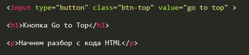
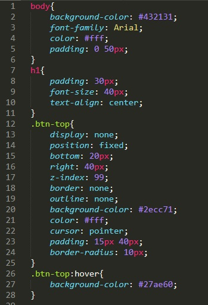
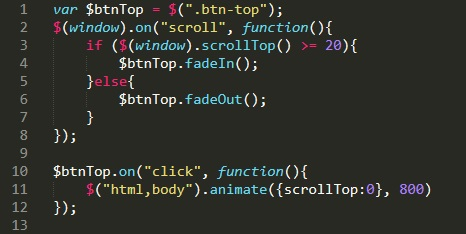

Начнем разбор с кода HTML
Здесь все по минимуму. Мы добавили кнопку которая будет по умолчанию скрыта и как только мы проскролим страницу вниз на 20 пикселей она будет появляться внизу справа. Для наглядности мы добавили заголовок и параграф с текстом. Параграф заполнять Lorem не буду так как достаточно будет текста разбора
Рассмотрим код CSS
body - стилизуем тег body
h1 - немного стилей заголовку
.btn-top - стилизуем нашу кнопку
.btn-top:hover - при наведении курсора на кнопку ее цвет немного потемнеет
Теперь рассмотрим код JavaScript
В самом начале мы объявляем переменную и делаем ее объектом элемента с классом btn-top. Далее мы обращаемся к библиотеке JQuery и обращаемся к объекту window (это значит что код будет работать когда наш DOC полностью загрузится). далее мы отслеживаем событие scroll (прокрутка экрана) и в этом случае запускаем функцию, которая говорит: если скрол экрана больше или равно 20 пикселям, то объект btnTop появляется с помощью функции FadeIn, иначе: объект btnTop скрывается с помощью функции FadeOut.
Затем мы создаем обработчик событий click по нашей кнопке который вызывает функцию, которая в свою очередь с помощью JQuery обращается к тегам html и body и применяет к ним функцию animate. У этой функции два входнух параметра: что делать и как быстро. В фигурных скобках мы говорим что свойство scrollTop (Свойство scrollTop содержит высоту прокрученной части элемента сверху.) получает значение 0, т.е. самый верх страницы. И говорим что это надо делась за 800 милисекунд.